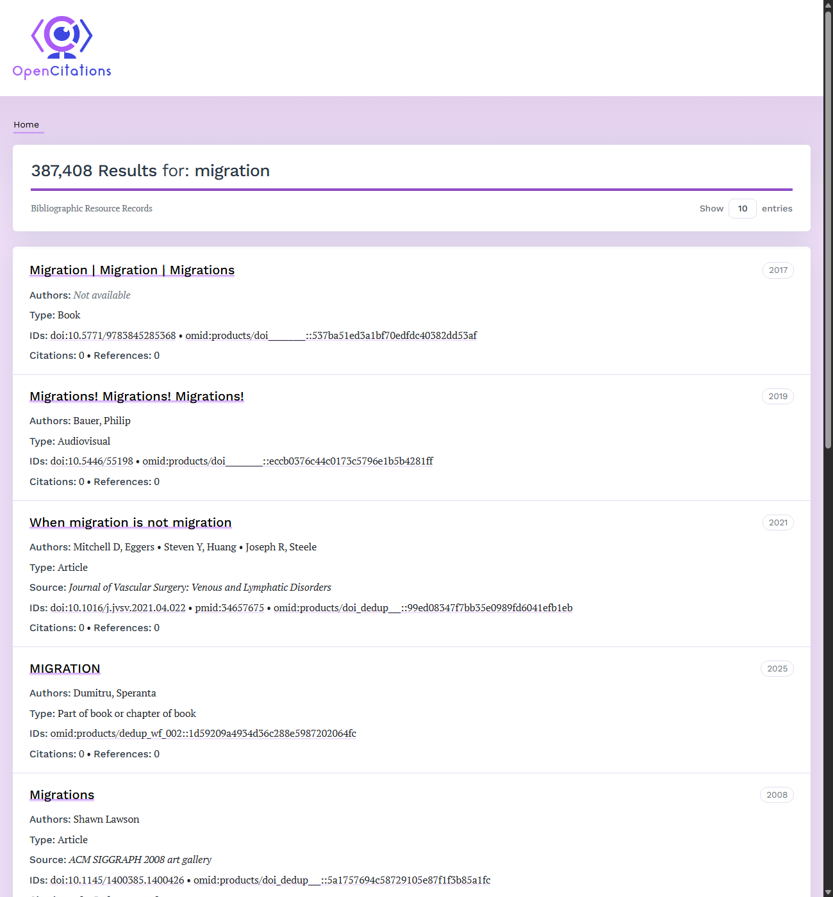
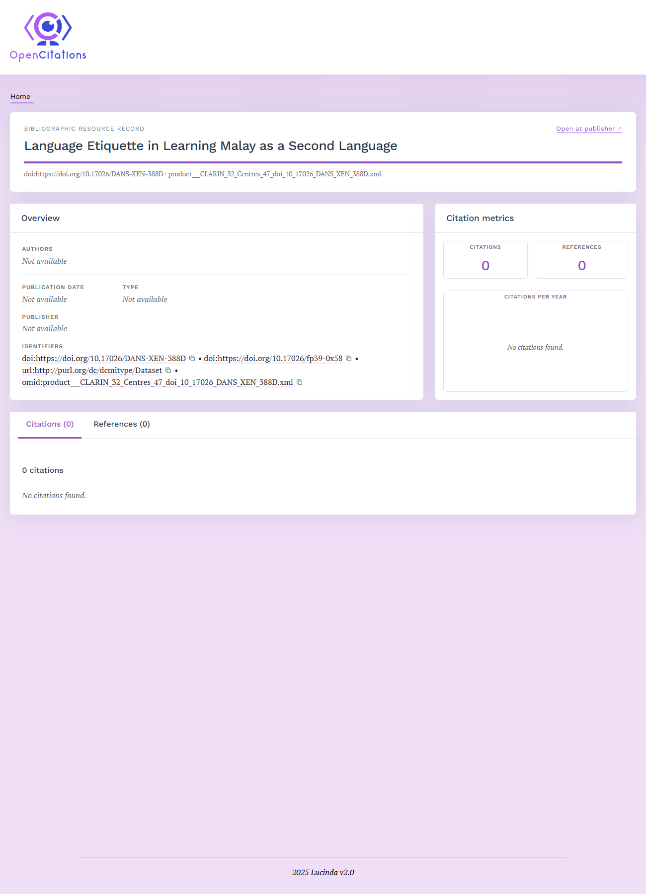
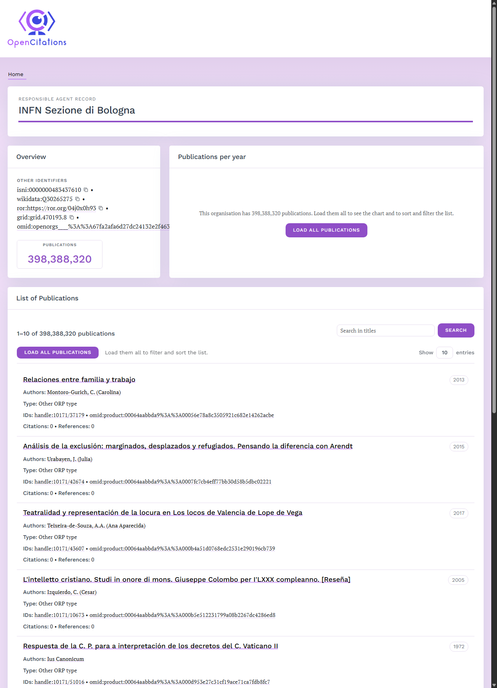

Recap 16/11 user testing
- numero persone: 20 persone, 10 su mobile 10 su pc
- chi sono le persone: laureandi, neolaureati, dottorandi, ricercatori, persone che durante gli anni universitari e/o per lavoro consultano bibliografia
- durata sessione: circa 30 min per allegerire carico cognitivo dell'utente
- una serie di 5/6 tasks indipendenti e agire su ciascun task indipendetemente
- ultimo task piu complesso
- lingua ita o en = DARE A CIASCUNO LA POSSIBILITà DI SCEGLIERE LA LINGUA CHE PREFERISCE TRA ITA E EN
- durata dei singoli tasks: misurare quanto ci metto io e moltiplicare x N (2/3): se supera tempo massimo dichiarare task come fallito gravemente
- SUS modulo scritto
- domande aperte: rispondere oralmente
- modalità sessione: videochiamata in cui registro tutto io ma dichiarare i limiti della modalità videochiamata (es: condizionamento dallamia presenza etc)
- persona --> user story --> task
Proposta di task (da testare fattibilità con utente prova)
Persona: Giulia, laureanda in linguistica computazionale, sta lavorando alla stesura della sua tesi che a grandi linee tratta della word sense disambiguation. Compiti dal più facile al più complesso; ognuno con un solo obiettivo e una sola risposta; tutti partono dalla home tranne il 4 (chr continua il 3).
| Compito | Da cercare | Mio tempo (PC / telefono) |
|---|---|---|
| 1. "Quante volte è stata citata la rassegna Recent Trends In Word Sense Disambiguation?" | DOI 10.24963/ijcai.2021/593 | |
| 2. "Giulia ha letto Random Walks For Knowledge-Based Word Sense Disambiguation. In quale anno le opere del suo primo autore hanno ricevuto più citazioni?" | titolo Random Walks For Knowledge-Based Word Sense Disambiguation | |
| 3. "Salva in un file BibTeX i lavori usciti nel 2018 che citano l'articolo su Babelfy." | DOI 10.1162/tacl_a_00179 | |
| 4. "Giulia ora vuole tutti i capitoli di libro che citano lo stesso articolo, di qualunque anno. Quanti sono?" | (stessa pagina del compito 3) | |
| 5. "Qual è l'identificativo Crossref della casa editrice che ha pubblicato il primo lavoro di Jorge Vivaldi?" | ORCID 0000-0003-1491-8691 | |
| 6. "Tra le opere che citano Nasari c'è An Overview Of Word And Sense Similarity. Quante opere sono citate da entrambi?" | DOI 10.1016/j.artint.2016.07.005 |
Tempo massimo = mio tempo × N
- Lewis (1982): uno di quattro modi per fissare il limite è prendere il tempo dell'esperto o il più veloce e porre la condizione inaccettabile a 1,5 volte "(or other multiple)".
- Sauro e Kindlund (2005): su 36 casi, rapporto tra il limite ricavato dagli utenti soddisfatti e il tempo dell'esperto da 1,1 a 7,6, media 3,2;il tempo dell'esperto è un "a rough guide".
- Sauro (2011, MeasuringU): 1,5 "(or another multiple)"; "It's unclear what a good multiple should be"
- FARE UNA STIMA TRA QUANTO CI METTO IO E QUANTO CI METTE UTENTE PILOTA E MOLTIPLICARE X N (2/3) PER STABILIRE IL TEMPO MASSIMO
Come mi cronometro: parto quando ho letto il compito e sono sulla pagina di partenza, mi fermo quando ho la risposta o il file salvato. L'attesa dell'API è inclusa (anche i partecipanti).
Scaletta della sessione (circa 30 min)
| Fase | Durata | Contenuto |
|---|---|---|
| 1. Domande iniziali | Hai mai usato questa piattaforma? Ci sono piattaforme simili che usi di solito? Quali? | |
| 2. Esplorazione libera | max 2 min | navigazione senza compiti |
| PRESENTARE UNA MECCANICA DANDO A TUTTI LE STESSE BASI PER PARTIRE, COSI TUTTI PARTONO DALLA STESSA BASE DI CONOSCIENZA (5 MIN) | ||
| 3. Compiti | i 6 compiti della tabella, uno alla volta, ciascuno con il suo tempo massimo | |
| 4. SUS | modulo scritto, 10 domande | |
| 5. Domande aperte finali | a voce, 2 positive e 2 negative:
| |
Q
- github pages
- modulo della privacy
- materiali da mandare prima: istruzioni della sessione e guidelines
- APPROFONDIRE LA QUESTIONE DELL'AMBIENTE DI STAGING CHE è UN AMBIENTE ONLINE/WEB DIETRO LE QUINTE: SI POTREBBE PENSARE DI PUNTARE A UN'ALTRA API PER VELOCIZZARE IL SISTEMA
Misure dei tempi di caricamento – proposta
- Idea: uno script automatico misura quanto l'API SKG-IF fa aspettare l'utente e quanto spesso non risponde.
- Cosa misura: una ventina di pagine reali (scheda documento, profilo autore, scheda organizzazione, profilo rivista, record di citazione, 4 ricerche), con liste piccole, medie e grandi:
- secondi fino a pagina mostrata, lista completa, scaricamento grafici;
- chiamate all'API, errori, risposte tagliate, esito (ok / incompleta / timeout);
- tempo del codice dell'interfaccia contro tempo di attesa dell'API.
- Script: JavaScript nel browser, apre le pagine in Chrome; cache disattivata; pagine in ordine casuale; più giorni e orari (da confermare con una prova pilota).
- Serve: quanto effettivamente servono soglie (250 etc) e altre misure precauzionali adottate (50-10-1), lavorare e riflettere sui limiti
- Analisi dei dati: mediana e SIQR (tempi asimmetrici, Jain 1991), percentuali di esiti (es. su 42 prove, quante sono finite "ok", quante "incompleta")
Notes
misurare con uno script automatico il tempo delle attese dell'api. Le misure servono a capire fin dove l'API permette un'interfaccia usabile, perché l'interfaccia è costruita su questa API: i limiti emersi durante lo sviluppo hanno portato a scelte lato codice (pagine che non arrivano richieste di nuovo in pezzi da 10, poi da 1) e lato design (soglie e bottone "Load all").
Perché misurare
La domanda è: fino a che punto l'API SKG-IF di OpenCitations permette di costruire un'interfaccia usabile? Le misure rispondono alla parte tecnica di questa domanda; l'altra parte della risposta viene dal test con utenti.
Il punto chiave: i tempi dipendono quasi solo dall'API e dalla rete, non dal codice dell'interfaccia.. Quindi le misure mostrano come si comporta l'API per chi ci costruisce sopra un'applicazione. È lo stesso punto di vista di Bermbach e Wittern (2020), che misurano le API web "as perceived by applications", trattando l'API come una scatola chiusa.
| Sotto-domanda | Cosa dicono le misure |
|---|---|
| SQ3. Quanto deve aspettare l'utente? | tempi di ogni pagina |
| SQ4. Quanto è affidabile l'API? | quante volte non risponde, risponde con errore o taglia i dati (errore: il server dichiara un problema, per esempio 500, 503 o 429 "troppe richieste"; dati tagliati: il server risponde "OK" ma la risposta è incompleta, e l'interfaccia se ne accorge solo leggendola e la richiede in pezzi più piccoli) |
| SQ7. Le scelte fatte durante lo sviluppo servono? | se la soglia con "Load all" e i nuovi tentativi (pagine da 50, poi 10, poi 1) sono necessari |
I limiti che emergono vengono poi attribuiti allo standard SKG-IF (per esempio: niente ordinamento né filtro per data, quindi per un grafico per anno bisogna scaricare tutta la lista) oppure all'API di OpenCitations (velocità, timeout, dati), oppure all'interfaccia (ogni limite si confronta con la documentazione ufficiale dello standard: se lo standard non prevede la funzione, il limite è di SKG-IF; se la prevede ma l'API di OpenCitations non la realizza, o risponde lenta o con errori, è di OpenCitations; se il tempo va nel codice, vedi "Tempo del codice e tempo di attesa", o gli utenti non capiscono la pagina, test con utenti, è dell'interfaccia). Da qui nascono le raccomandazioni finali del white paper.
Cosa si misura
Si misurano 21 pagine reali del sito, scelte piccole, medie e grandi per vedere come cresce l'attesa con la quantità di dati.
| Pagina | Casi | Note |
|---|---|---|
| Scheda documento | 6 documenti, da 24 a 3.865 citazioni (per ognuno si misurano sia le citazioni sia i riferimenti, da 13 a 334) | liste sotto e sopra la soglia automatica di 250 |
| Profilo autore | 4 autori: 6, 18, 115 e 298 opere | si scaricano sempre tutte le opere, poi le citazioni ricevute |
| Scheda organizzazione | 4 editori: da 61 a 3.661 pubblicazioni (gli editori con milioni di pubblicazioni non sono scaricabili: vedi sotto) | liste sotto e sopra la soglia di 500 |
| Profilo rivista | Scientometrics | solo metadati |
| Record di citazione | 2 citazioni: una piccola, una con un documento citato 3.865 volte | 8 chiamate SKG-IF e 2 grafici dall'API Index |
| Ricerche | documenti, autori, riviste, organizzazioni | prima pagina dei risultati |
Per ogni pagina si registrano i secondi fino a:
- pagina mostrata (o prima pagina dei risultati, per le ricerche);
- lista completa di citazioni, riferimenti, pubblicazioni o opere: serve per grafico, filtri e ordinamento;
- nel profilo autore, numero di citazioni ricevute (una chiamata per opera) e grafico delle citazioni per anno;
- nel record di citazione, i due grafici per anno.
Insieme al tempo si contano le chiamate all'API (spiegano i tempi), le risposte di errore, le richieste senza risposta e le pagine richieste di nuovo in pezzi più piccoli. Ogni misura ha un esito: ok, incompleta (arrivata ma con dati mancanti) o timeout (non arrivata entro il limite) (i limiti di tempo sono due, entrambi scelti da noi: quello di una singola richiesta, fissato durante lo sviluppo nel codice dell'interfaccia, 35 s per una pagina da 50, 15 s da 10, 10 s per un elemento, oltre i quali la richiesta è rifatta in pezzi più piccoli; e quello di una prova intera, 15 minuti, fissato nello strumento di misura).
Un editore con milioni di pubblicazioni non è misurabile: Elsevier ne ha 17.564.935 (ra/0610116009), cioè circa 350.000 chiamate da 50
Come si misura
Le misure sono fatte da uno script automatico (tools/misure.html + timing.js), che apre ogni pagina in Chrome, aspetta che sia caricata e registra i tempi. Lo script e i dati sono nel repository, quindi chiunque può ripetere l'esperimento.
| Scelta | Perché | Riferimento |
|---|---|---|
Cache del server sempre disattivata (preview=true), cache del browser disattivata | ogni prova misura la risposta reale dell'API, come per il primo visitatore | suggerimento del professore |
| Prove ripetute, in più giorni e orari | la velocità di un'API cambia molto nel tempo | Bermbach e Wittern (2020), sez. 5; Papadopoulos et al. (2021), P1 |
| Ogni sessione fatta di giri; in ogni giro tutte le pagine una volta, in ordine casuale | le prove consecutive dello stesso caso non sono ripetibili: un momento lento colpirebbe un caso solo | Abedi e Brecht (2017) |
| Casi piccoli, medi e grandi | coprire situazioni diverse | Papadopoulos et al. (2021), P2 |
| Registrati automaticamente: browser, data, ora; annotati a mano: computer e connessione | descrivere l'ambiente della misura | Papadopoulos et al. (2021), P3 |
| Script e CSV pubblicati nel repository | rendere ripetibile l'esperimento | Papadopoulos et al. (2021), P4 |
| Unità sempre dichiarate (secondi, numero di chiamate) | Papadopoulos et al. (2021), P7 |
Altre regole operative:
- sopra le soglie (250 per i documenti, 500 per le organizzazioni) lo script preme da solo "Load all" e misura dal clic;
- ogni prova ha un limite di 15 minuti, oltre il quale è registrata come timeout (scelta mia, ben sopra il caso più lento osservato);
- durante una sessione il computer resta fermo con la pagina in primo piano, perché Chrome rallenta le schede nascoste; le prove con la scheda nascosta vengono segnalate e scartate;
- il costo in denaro (P8 di Papadopoulos et al.) non si applica: l'API è gratuita.
Tempo del codice e tempo di attesa
Per verificare (non solo affermare) che i tempi dipendono dall'API e non dall'interfaccia, ogni misura registra anche il lavoro della pagina stessa. Lo fa il browser con la Long Tasks API (standard W3C), che segnala ogni momento in cui il codice tiene occupata la pagina per più di 50 ms. Nel CSV ci sono quattro colonne nuove:
| Colonna | Cosa misura |
|---|---|
busy_ms | tempo in cui il codice dell'interfaccia ha tenuto occupata la pagina; il resto del tempo misurato è attesa dell'API |
longest_task_ms | il blocco più lungo: per quanto, al massimo, la pagina non ha risposto ai clic |
heap_peak_mb | memoria massima usata dalla pagina (solo in Chrome) |
cut_responses | risposte arrivate con "OK" ma con i dati incompleti (risposta tagliata dal server) |
Lo script R calcola per ogni pagina la quota di tempo del codice (code_share) e disegna un grafico in cui ogni barra è divisa in tempo del codice e tempo di attesa.
Limiti: i blocchi sotto i 50 ms non vengono contati, quindi il tempo del codice è un po' sottostimato; la memoria si misura solo in Chrome.
Quante volte
7 giorni, 2 sessioni al giorno (mattina e sera), 3 giri per sessione, cioè 42 prove per pagina. Il numero va confermato con una sessione pilota.
Nessuna delle fonti fissa un numero di ripetizioni. Papadopoulos et al. (2021, P1) chiedono di sceglierlo in base a quanto variano i risultati e di dichiararlo. Jain (1991, cap. 13) dà una formula per il numero di prove n necessario a stimare la media con precisione ±r% e confidenza 95% (z = 1,96), dove s è la deviazione standard osservata:
n = ( 100 · z · s / ( r · x̄ ) )²
Procedura:
- sessione pilota con tutte le pagine e 3 giri: dice quanto dura una sessione e quanto variano i tempi;
- lo script R calcola n per ogni pagina con r = 10%;
- si fissano sessioni e giorni in modo da arrivarci, e si dichiara la scelta nella tesi.
Sette giorni coprono giorni feriali e weekend; due orari permettono di vedere se l'ora conta. Bermbach e Wittern (2020) mostrano che i tempi di un'API possono variare di circa 10 volte nel tempo.
Analisi in R
Alla fine si scarica un CSV (una riga per misura, formato pronto per R) e lo script tools/analysis.R calcola le statistiche e disegna i grafici.
I tempi sono asimmetrici: quasi tutte le prove sono veloci, poche sono molto lente. Per questo si usano la mediana come valore centrale e lo scarto semi-interquartile (SIQR) come dispersione, come indica Jain (1991, cap. 12) per le distribuzioni asimmetriche. Per ogni pagina e misura:
- numero di prove valide, mediana, primo e terzo quartile, IQR e SIQR, 10° e 90° percentile, minimo e massimo;
- media e deviazione standard, solo per la formula di Jain;
- percentuale di prove ok, incomplete e in timeout, e totale degli errori dell'API.
| Grafico | Cosa mostra | Nella tesi |
|---|---|---|
| Box plot dei tempi per pagina, con linee a 1 s e 10 s (Nielsen, 1993) | quanto si aspetta e quanto varia | sì |
| Tempo rispetto alla dimensione della lista (mediana e IQR) | più dati = più attesa; perché la soglia con "Load all" | sì |
| Esiti ok, incompleta, timeout per pagina | affidabilità dell'API | sì |
| Mediana di ogni sessione nel tempo, tempi per ora del giorno | se la velocità cambia tra giorni e orari | se mostra qualcosa |
| Chiamate rispetto alla dimensione della lista | perché i tempi crescono | facoltativo |
| Tempo del codice contro tempo di attesa, per pagina | che i tempi dipendono dall'API e non dall'interfaccia | sì |
Fonti
- Abedi, A., & Brecht, T. (2017). Conducting repeatable experiments in highly variable cloud computing environments. In Proceedings of the ACM/SPEC International Conference on Performance Engineering (pp. 287–292). ACM. https://doi.org/10.1145/3030207.3030229
- Bermbach, D., & Wittern, E. (2020). Benchmarking web API quality – revisited. Journal of Web Engineering, 19(5–6), 603–646. https://doi.org/10.13052/jwe1540-9589.19563
- Jain, R. (1991). The art of computer systems performance analysis: Techniques for experimental design, measurement, simulation, and modeling. Wiley. Capitoli 12 e 13 verificati sulle slide del corso dell'autore.
- Nielsen, J. (1993). Usability engineering. Academic Press. Soglie di 0,1 s, 1 s e 10 s, riprese da Miller (1968); verificate solo su fonte secondaria.
- Papadopoulos, A. V., Versluis, L., Bauer, A., Herbst, N., von Kistowski, J., Ali-Eldin, A., Abad, C. L., Amaral, J. N., Tůma, P., & Iosup, A. (2021). Methodological principles for reproducible performance evaluation in cloud computing. IEEE Transactions on Software Engineering, 47(8), 1528–1543. https://doi.org/10.1109/TSE.2019.2927908
- Standard SKG-IF, API: https://skg-if.github.io/api/
Riusabilità
- Domanda: LUCINDA, configurata per OpenCitations, funziona con un altro endpoint SKG-IF?
- Prova: su una copia del sito, con OpenAIRE, cambiando solo 2 righe di
config.js: indirizzo dell'API (SKGIF_API) e inizio degli identificativi (SKGIF_ID_BASE). - Ricerche: funzionano per le risorse in comune (documenti, autori, organizzazioni); quella delle riviste no, perché OpenAIRE non ha venues.
- Schede: non si aprono ("No template is suitable"). L'indirizzo della scheda contiene l'OMID (
br/…,ra/…) e LUCINDA sceglie il template dal prefisso; gli OMID esistono solo in OpenCitations, gli altri endpoint hanno identificativi propri, quindi nessun template li riconosce. - Soluzione: il tipo nell'indirizzo della scheda (
value=product:{id},person:,organisation:,venue:), preso dal campoentity_typedei dati SKG-IF per far aprire le schede; quanto si riempiono dipende dai filtri e dai dati dell'endpoint.
SE TI BASI SU SKG-IF CE LI HAI DEI TIPI DI DEFUALT COME VENUE ETC (TEMPLATE GENERICO SU RESEARCH PRODUCT CHE TI FA VEDERE TUTTE LE INFO = è UN TEMPLATE GENERALE). LO DEVI FARE PER FORZA CON ASK. CI VORREBBERO 4 SCHEDE DIVERSE PER OGNUNO DI QUESTI TIPI CHE SE NON MATCHA CON QUELLE 4 MACRORISORSE CI SONO QUESTE SCHEDE DI RIPIEGO. BACKUP LANDING PAGE PER LA MACRORISORSA. COSA PIU DELICATA SONO I RESEARCH PRODUCT GLI ALTRI SONO PIU FACILI. QUINDI BENDANDOSI GLI OCCHI, PER UNA SOLA QUESTIONE DI RIUSABILITà, BISOGNA CREARE DELLE SCHEDE DI BACKUP PERCHE SE PER ESEMPIO NON HO MATCH SU JOURNAL ARTICLE ALMENO HO LA SCHEDA PER LA LIYERATURE. POI INOLTRE SI PUO LAVORARE SU FILE DI CONFIGURAZIONE: PER GESTIRE TUTTO TRAMITE CONFIGURAZIONE POSSO PROVARE A SPEGNERE/DISATTIVARE QUELLE RISORSE CHE QUELL'ENDPOINT NON GESTISCE.
Notes
Domanda: Lucinda, configurato per OpenCitations, funziona anche con un altro endpoint SKG-IF? Prova fatta su copie del sito fuori dal repository (il progetto non è stato toccato), con gli endpoint elencati nella pagina ufficiale degli implementatori (https://skg-if.github.io/api/docs/api-implementors.html).
Gli endpoint SKG-IF disponibili
| Endpoint | Risponde? | Usabile dal browser (CORS) | Entità |
|---|---|---|---|
| OpenCitations | sì | sì | products, persons, organisations, venues |
| OpenAIRE (prod e beta) | sì | sì | products, persons, organisations, grants, datasources; niente venues |
| CLARIN (solo staging) | sì | sì | products, persons, organisations, venues |
| CESSDA (prod e staging) | sì | no | products, persons, organisations, topics; niente venues |
| FSD | solo products | no | products |
| TeslaRIS, OPERAS/GoTriple | no (errori 500/502) | – | – |
| SKG-IF RDA WG | nessuna API online (solo codice da installare) | – | – |
CESSDA prod e staging hanno lo stesso codice e gli stessi filtri; cambiano solo i dati (staging è l'ambiente di prova, con un caricamento diverso). CORS: senza l'header Access-Control-Allow-Origin il browser blocca le risposte, quindi con CESSDA ogni pagina di Lucinda dà "Service unavailable". Si può risolvere solo lato CESSDA.
Prova 1: cambiare solo config.js
In config.js sono cambiate due righe: indirizzo dell'API (SKGIF_API) e inizio degli identificativi (SKGIF_ID_BASE).
| Pagina | CLARIN | OpenAIRE | CESSDA (con CORS disattivato solo per il test) |
|---|---|---|---|
| Ricerca documenti | funziona | funziona | funziona |
| Ricerca autori | funziona | funziona | funziona solo cambiando anche i nomi dei filtri in config.js |
| Ricerca organizzazioni | funziona | funziona | funziona |
| Ricerca riviste | funziona | "Service unavailable" | "0 results" |
| Schede (clic su un risultato) | "No template is suitable" su tutti e tre | ||
Le ricerche sono riusabili, le schede no.

Perché le schede non si aprono
Nella ricerca l'indirizzo dice cosa si cerca (value=author/smith), quindi Lucinda sa quale template usare. Nella scheda l'indirizzo contiene solo l'OMID (value=br/061..., value=ra/061...): Lucinda capisce il tipo dal prefisso dell'OMID (br/ = documento o rivista, ra/ = autore o organizzazione). Gli OMID esistono solo in OpenCitations; gli altri endpoint hanno identificativi propri (OpenAIRE persons/orcid_______::3f98..., CLARIN otf___person___smith_john, CESSDA cessda_person_48bef...), quindi nessun template li riconosce. SKG-IF chiede solo che ogni entità abbia un local_identifier, non come deve essere scritto.
Prova 2: il tipo nell'indirizzo della scheda
Sulle copie di CLARIN e OpenAIRE: value=br/{id} e value=ra/{id} sostituiti da value=product:{id}, person:{id}, organisation:{id}, venue:{id}. Il tipo viene dal campo entity_type dei dati SKG-IF. Cambiati: i 4 .hf delle schede, i punti che costruiscono i link alle schede, le pagine JS (tolti br/ e ra/ scritti a mano) e config.js (come leggere gli ID di quell'endpoint).
| Scheda | CLARIN | OpenAIRE |
|---|---|---|
| Documento | si apre (dati poveri: autori, data, tipo "Not available") | si apre; References in errore (manca cf.cited_by), Citations sempre 0 |
| Rivista | si apre | non esiste (niente venues) |
| Autore | nome e ID; lista delle opere in errore (manca il filtro contributions.by.local_identifier) | non provata (vedi sotto) |
| Organizzazione | nome e ID; lista delle opere in errore (stesso filtro) | si apre, ma con 398.388.320 pubblicazioni |
Con il tipo nell'indirizzo tutte le schede si aprono. Quanto si riempiono dipende dai filtri e dai dati di ogni endpoint.
OpenAIRE non rifiuta il filtro "opere di questa persona/organizzazione": lo ignora e restituisce tutto il database. L'organizzazione risulta quindi con 398 milioni di pubblicazioni e mostra opere a caso; la scheda autore, che scarica tutte le opere, avrebbe provato a scaricarle tutte, per questo non è stata aperta. Un filtro ignorato in silenzio è più pericoloso di un errore: dà risultati sbagliati senza avvisare.


Altre cose specifiche di OpenCitations
- logo, favicon, colori, testi della home;
- messaggio d'errore "The OpenCitations API is temporarily unable to answer" (
core.js); - etichetta "omid:" davanti agli identificativi;
Sono personalizzazioni normali (la cartella è example/oc, cioè la configurazione per OpenCitations), non problemi di struttura.
Conclusione
- Ricerche: riusabili cambiando solo
config.js(CLARIN 4 su 4, OpenAIRE 3 su 4). - Schede: legate agli OMID. Con il tipo nell'indirizzo si aprono su qualsiasi endpoint; cambierebbero però gli indirizzi delle schede anche per OpenCitations (salvo tenere
br/era/come alias). - Limiti degli endpoint, non risolvibili da Lucinda: CORS, entità e filtri mancanti, filtri ignorati, dati poveri.
Interfaccia
Q
- Piè di pagina: oggi solo "2025 Lucinda v2.0". Aggiungere pochi link testuali come nel sito OpenCitations (es. OpenCitations · SKG-IF API · Documentation · Source code)? Quali?